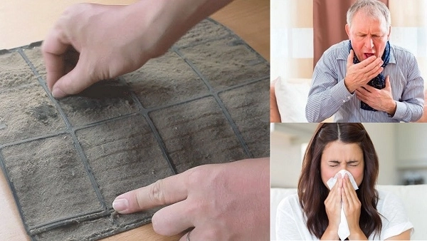

Cập nhật tháng 04/2026: Theo dự báo từ Trung tâm Khí tượng Thủy văn, mùa hè năm 2026 tại Hà Nội và các tỉnh miền Bắc sẽ đón những đợt nắng nóng gay gắt sớm hơn mọi năm, với nền nhiệt có thể vượt mức 40 độ C ngay từ đầu tháng 5. Để đối phó với thời tiết khắc nghiệt này, chiếc điều hòa của gia đình bạn sẽ phải hoạt động với 100% công suất.
Tuy nhiên, sau một thời gian dài "ngủ đông", việc bật lại điều hòa ngay lập tức mà bỏ qua khâu kiểm tra, bảo dưỡng là nguyên nhân hàng đầu khiến máy bị "đột tử". Dưới đây là 5 lý do sống còn giải thích vì sao bạn cần gọi thợ vệ sinh điều hòa ngay trong tháng 4 này.

Vệ sinh lưới lọc và dàn tản nhiệt là bước bắt buộc trước khi mùa nóng đổ bộ1. Khôi phục khả năng làm lạnh sâu tức thì
Lớp bụi bám dày đặc trên màng lọc dàn lạnh và các cánh tản nhiệt dàn nóng chính là "bức tường" ngăn cản hơi lạnh thổi ra phòng. Dù bạn có hạ nhiệt độ xuống 16 độ C, phòng vẫn bí bách. Việc xịt rửa bằng máy bơm áp lực chuyên dụng sẽ đánh bay hoàn toàn bụi bẩn, giúp máy khôi phục hiệu suất làm lạnh như lúc mới mua.
2. Tiết kiệm tới 30% hóa đơn tiền điện mùa hè
Khi bị bít tắc bởi bụi, máy nén (Block) điều hòa sẽ phải chạy liên tục không ngừng nghỉ để cố gắng đạt được mức nhiệt độ yêu cầu. Việc này tiêu tốn một lượng điện năng khổng lồ. Chỉ với chi phí từ 150.000đ cho một lần bảo dưỡng, bạn có thể tiết kiệm được hàng trăm nghìn đồng tiền điện mỗi tháng trong suốt mùa hè 2026.
3. Ngăn chặn mùi hôi và bảo vệ hệ hô hấp
Khoang dàn lạnh ẩm ướt là môi trường lý tưởng để nấm mốc và vi khuẩn sinh sôi trong suốt mùa đông. Khi bạn bật máy, luồng gió thổi ra sẽ mang theo hàng triệu vi khuẩn và mùi hôi chua khó chịu. Đây là thủ phạm chính gây ra các bệnh viêm họng, viêm mũi dị ứng cho trẻ nhỏ và người cao tuổi.
4. Phòng tránh tình trạng chảy nước ngược vào nhà
Mảng bám rêu mốc và bụi bẩn tích tụ lâu ngày sẽ làm tắc nghẽn máng hứng và đường ống thoát nước thải. Khi máy chạy, nước ngưng tụ không thoát ra ngoài được sẽ chảy ngược vào trong phòng, gây thấm ố tường, hỏng sàn gỗ và làm chập cháy các thiết bị điện tử bên dưới.
5. Kiểm tra và bổ sung gas kịp thời
Quá trình thợ bảo dưỡng luôn đi kèm với việc dùng đồng hồ đo áp suất gas. Nhờ đó, bạn sẽ biết được máy có bị rò rỉ hay hao hụt gas trong năm qua hay không. Bổ sung đủ gas (R32, R410A hoặc R22) không chỉ giúp máy mát lạnh mà còn bảo vệ tuổi thọ của Block máy nén không bị cháy do làm việc quá tải.
Đừng chờ đến khi "Mất Bò Mới Lo Làm Chuồng"
Vào những đợt đỉnh điểm nắng nóng (tháng 5, tháng 6), thợ điều hòa thường xuyên rơi vào tình trạng quá tải. Bạn sẽ phải chờ đợi lâu, thậm chí phải chịu mức chi phí dịch vụ tăng cao. Vì vậy, việc bảo dưỡng điều hòa trong tháng 4 này là một quyết định thông minh và tiết kiệm nhất.
Hãy liên hệ ngay với Điện Lạnh Bách Khoa qua Hotline 0559763681 hoặc 0367274152. Kỹ thuật viên của chúng tôi sẽ có mặt tại nhà bạn chỉ sau 20 phút để biến chiếc điều hòa trở nên sạch sẽ, mát lạnh sẵn sàng "chiến đấu" với mùa hè 2026!